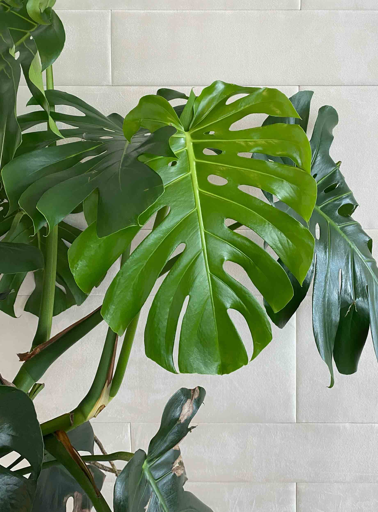
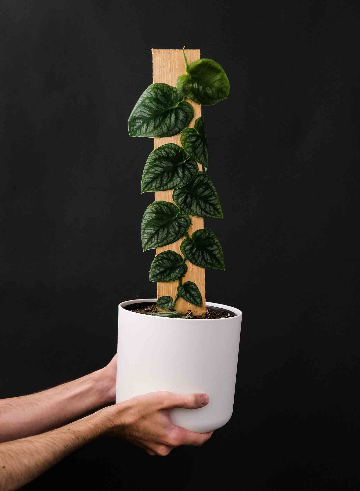
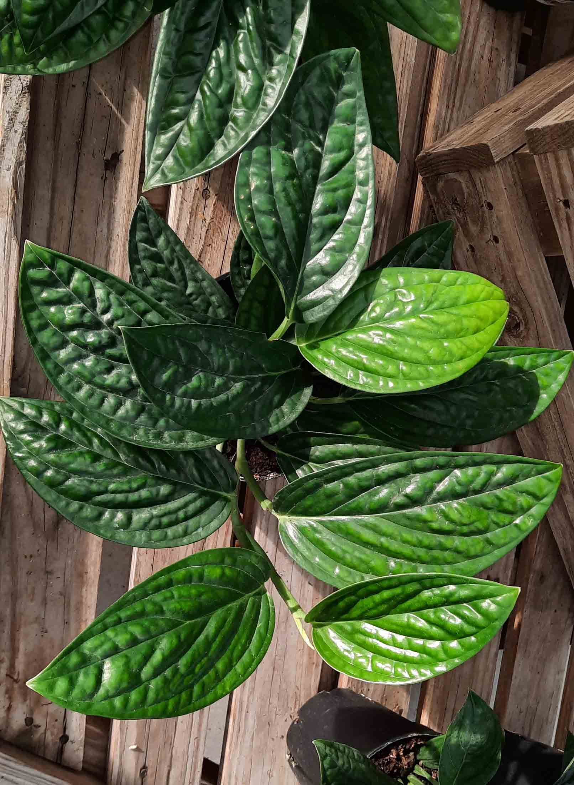
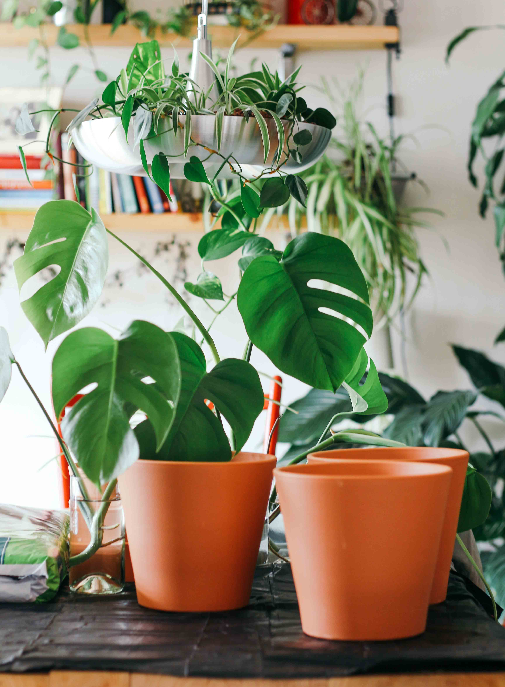
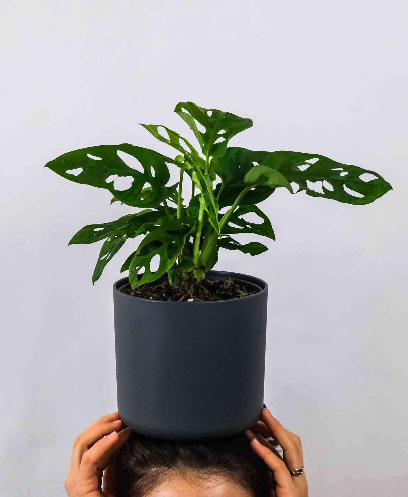
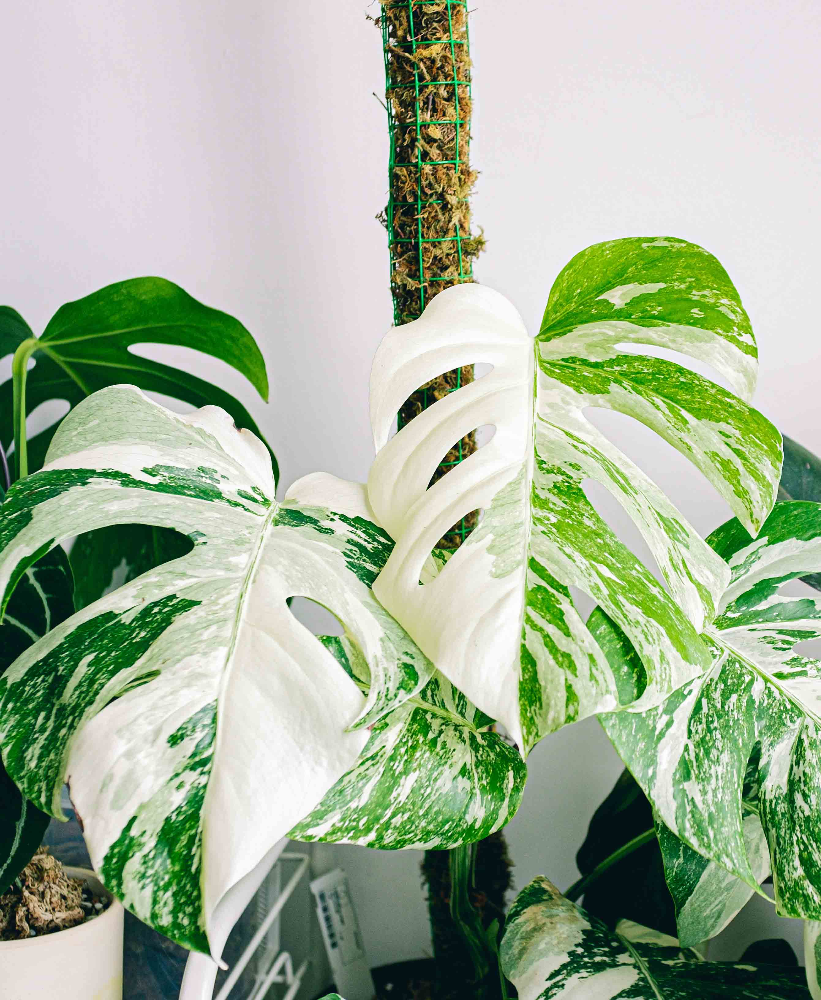
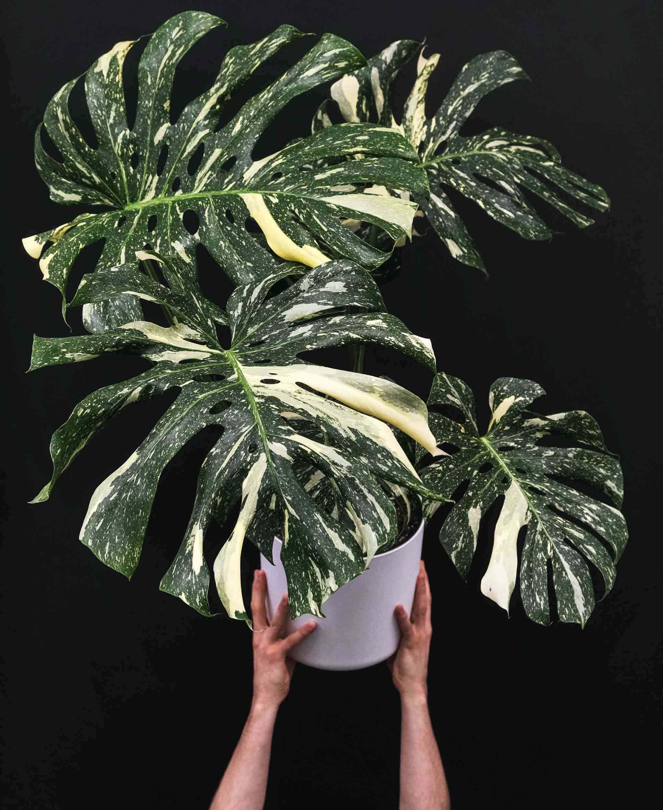
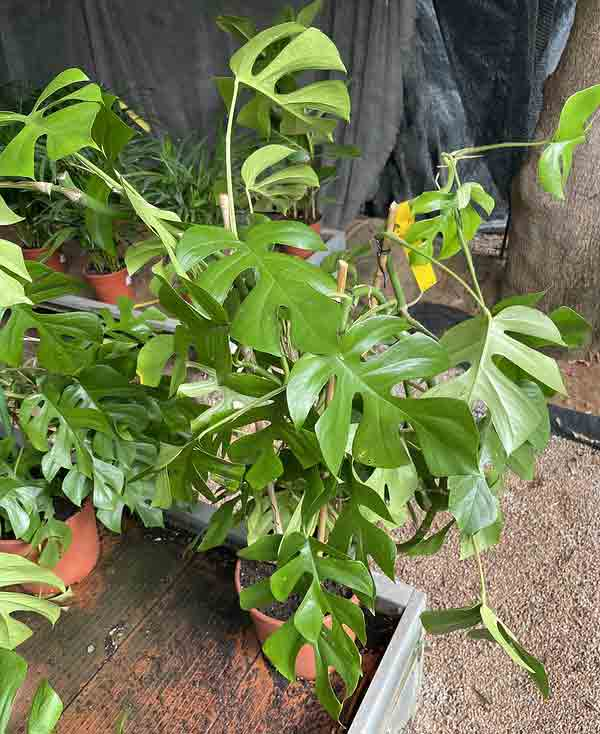

Monstera
1.Deliciosa 2.Dubia 3.Peru 4.Esqueleto 5.Adansonii 6.Adansonii Laniata 7.Obliqua 8.Stiltpecana 9.Deliciosa Thai Constellation 10.Deliciosa Aurea 11.Deliciosa Borsigiana Albo
Caring for the Monstera Family
Monsteras have holes in their leaves naturally, these are called fenestrations. When monsteras get large enought, they can be propped up by a moss pole as these plants require support to grow to large heights, and they can grow up to 20 ft or more if properly cared for. The aerial roots are meant for balancing the plant and allowing it to climb, and soaking up nutrients and moisture in the air.
Temperature: Keep above 50°F to sustain life, but optimally above 65°F for active growth.
Light: Monsteras prefer light shade to bright light (Keep out of direct sunlight). The more light, the more varegation and fenestrations.
Water: Keep soil moist but not waterlogged throughout the winter months, and water thoroughly the rest of the year allowing the soil to dry in between waterings.
Some common problems include: A rotting stem; avoid watering too much when temperature is lower as the fungus that causes rotting thrives in these conditions. Yellowing: Overwatering causes yellowing of the leaves if rotting and wilting are present, if this isn't present it is likely due to underwatering.
-
Monstera Deliciosa
 -
Monstera Dubia
 -
Monstera Peru
 -
Monstera Minima
 -
Monstera Adansonii
 -
Monstera Albo
 -
Monstera Thai Constellation
 -
Raphidophora Tetrasperma
